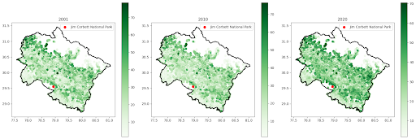
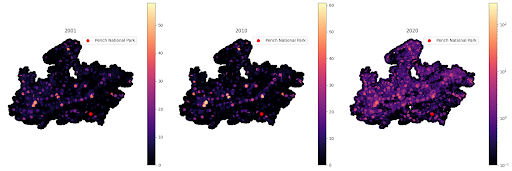
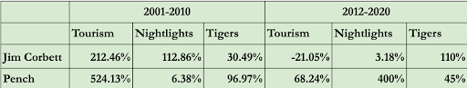

Impact of Commercialisation on National Parks in India
Authors:
1. Nidhi Srivastava (Section 4, nidhiATUchicago)
2. Kishika Mahajan (Section 4, kishikamahajan)
As of 2023, there are 106 existing national parks in India covering an area of approximately 44,403 km2, which is 1.35% of the geographical area of the country. Many of these national parks, home to the ‘Royal Bengal Tigers’, have become prime tourist attractions of the country. India, with the effort of 50 years of Tiger conservation measures, now harbours almost 75% of the world’s wild tiger population. Due to this remarkable increase in tiger sightings resulting from continuous conservation efforts, we have seen a commensurate increase in the higher commercialisation of national parks and tourist footfall. The goal of this study is to assess the implications of rising commercialisation on tiger population and further understand the sustainability of such conservation policies. The anticipated impacts of commercialization included forest cover depletion, a rise in tourism, increased economic activity, and a decline in wildlife populations.
Data and Methodology For the purpose of our analysis, we make use of the forest cover data to explore the evolution of forest areas in India over the years. Additionally, we use the Nighttime lights data to understand the economic activity in India over the years. The Forest Cover data and Nightlight data has been sourced from the SHRUG platform developed by Development Data Lab. The granularity of the data goes down till the village or the town level. We use other SHRUG data on location coding and coordinates to assist with plotting.
The study explores these indicators mainly around two national parks : Jim Corbett National Park and Pench Tiger Reserve. Jim Corbett is located in Ramnagar, Nainital Uttarakhand and harbours maximum tigers in India. It is one of the prime attractions for wildlife tourism and relatively very commercialized to cater to increasing tourist demands. We choose this as one of our study areas because of its bustling development over recent years. Our next choice of study area, Pench Tiger reserve is located in Kurai Village, Seoni-Chhindwara districts of Madhya Pradesh. It is home to just 77 tigers as opposed to 260 tigers in Jim Corbett and is relatively significantly less commercialised.
To analyse the forest cover and night lights, we essentially look at three years in particular which are 2001, 2010 and 2020. We first analyse the mean vcf (Vegetation Continuous Fields) across India in the three years. For the chosen years between 2000-2011, we use the The Defense Meteorological Program (DMSP) satellite data and for years between 2012-2020, we use the VIIRS nighttime lights data. We also use Tourism Data (both domestic and foreign) from Tourist Statistics Reports published by the Government of Madhya Pradesh and Government of Uttarakhand. Essentially we make an exploration of how forest cover and night lights have evolved across the span of our study and draw comparison with tourism movements and wildlife census.
The coding of the project mainly involves three parts: Forest Cover Analysis, Nightlight Analysis, Tourism Footfall Analysis and Shiny Dashboard App. The forest cover and nightlight code involves using static visualisations using libraries like matplotlib, altair and geopandas. The Shiny Dashboard code involves building a multi-page dashboard that shows a dynamic plot of forest cover evolution from 2001-2020. The second page tourism static trend lines in a comparative set up with a toggle and input list options. To further aid our analysis, we have also performed a Natural Language Processing analysis of various news reports on forest cover data collection and methodology. These news articles were web scraped using BeautifulSoup.
Forest Cover Analysis
Contrary to expectations, forest cover showed an increase rather than over the years. We observed this on an all-India level and also on subsequent levels of the states and districts in which the national parks are situated. Ramnagar, Uttarakhand (sub district in which Jim Corbett National Park is located) reported a 21.42% rise in VCF Mean from 2001 to 2020, and Kurai (village in which Pench National Park is located), Madhya Pradesh, observed a 3.95% increase. Essentially, the more commercialised national park saw a greater increase in forest cover. 
These findings prompted further investigation into the validity of the methodology of measuring forest cover. For this purpose, we conducted a polarity analysis by scraping 11 news articles.
We found that the polarities ranged from -0.03 to 0.15. This meant the articles were at most neutral and we suspect that it was essentially because there is some sort of an introduction in every news article which contributed to its “neutrality”. Essentially, these articles suggest the methodology of measuring forest cover is not accurate and hence, the real forest cover is not representative of the positive estimates of growing forest cover that are largely shown.
Nighttime Lights Data Analysis
As would’ve been expected, nighttime lights increased over the years. We observed this on an all-India level and also on subsequent levels of the states and districts in which the national parks are situated. Ramnagar experienced a 112.86% increase in nightlights from 2001 to 2010, aligning with peak commercialization around Jim Corbett. In contrast, Kurai, Madhya Pradesh, showed a slower 6.38% rise during the same period, but a dramatic 400.35% increase from 2012 to 2020, reflecting a later commercialization phase. The trend around the areas of Pench was something that stood out for us. 
Tourism Analysis
Tourism trends revealed significant growth, particularly in Pench National Park, which saw a remarkable 1417% increase in footfalls compared to 480% in Jim Corbett between 2000 and 2021. While Jim Corbett historically attracted more tourists, Pench has become a popular destination, especially for tiger sightings. During 2000-2010, Pench experienced a 524% rise in tourism compared to Jim Corbett’s 212%, but the growth reversed in 2010-2021, with Jim Corbett seeing a 447% increase compared to Pench’s 143%.
Conclusion
We summarise our findings in two main periods, 2001-2010 and 2012-2020. 
We assume that nightlights have a lagged effect as it typically takes time for people to respond to increase in demand. Hence, the increase in nightlights in one period stems from the increase in demand in the previous period. For Jim Corbett, we see a stark increase in nightlights which we suppose comes from the early commercialisation in the National Park. Due to spillover effects of the already commercialized park (Jim Corbett) and increase in Tiger population in Pench, we see a sudden influx of tourists in Pench. The increase in nighlights in Pench however had been significantly low. In the subsequent years, we see sudden “commercialisation effects” in Pench due to sudden influx of tourism in the previous period. Further, the little increase in nightlights and the fall in tourism leads to higher tiger numbers in Jim Corbett National Park. While our primary intuition was a negative impact of commercialisation on tiger sightings, we actually see tiger conservation as a positive externality for the adjoining human settlements. In other words, an increase in tourism due to an increase in the probability of tiger sightings attracted a lot of economic development in the adjoining areas.
Few Drawbacks: There are data measurement issues with Forest Cover and hence may not be the purest indicator for the purpose of our study. Even if the forest cover data is accepted as it is, we might need further exploration of forest densities of the areas under study to understand the actual portion of land that is suitable for wildlife habitability. This would also require land distribution data time series. We also needed a precise measure of probability of tiger sightings which was currently out of scope of our study.
The drawbacks of the study also act as a valid way forward that would further help refine our analysis. We could further use land distribution data to extract tiger suitable habitats to calculate the precise forest cover change. Further using data on adjoining human settlements could also help us analyse the potential impact of commercialisation on community welfare development. This can also enable us to examine community rehabilitation effects as a result of the government’s strong focus on wildlife conservation policies. One of the potential uses of our study is the implementation of Spatial Explicit Capture Recapture Method that uses captured photos of tiger data and spatial data like forest cover and nightlight to estimate tiger densities. If such primary data is made available, we hope to use Machine Learning models like the Random Forest (expected to be explored further in next quarter) to predict tiger sightings using similar spatial data as used in our current study.